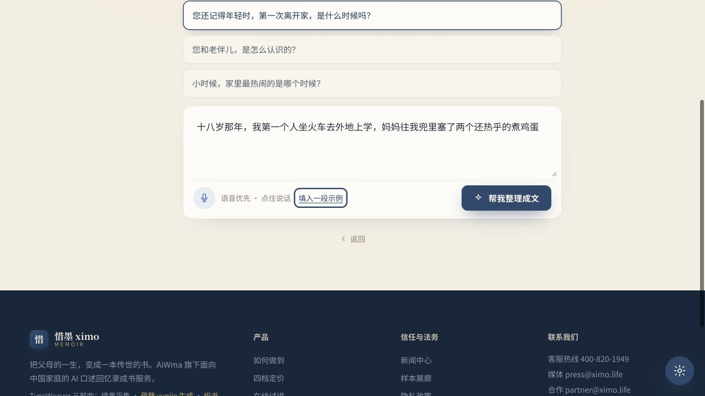

Agent 名录判定
【已确认】 本次公开界面中只有“温情记者·小语”以具有角色名、对话状态、问题引导、输入与执行入口的形式出现，因此只把它登记为显式 Agent。E-A-001
STAGE 2 · OBSERVABLE AGENT CONTRACTS
惜墨 XIMO 网站版 · Agent 契约页面证据版 · 2026-08-19 复核
【已确认】 本次公开界面中只有“温情记者·小语”以具有角色名、对话状态、问题引导、输入与执行入口的形式出现，因此只把它登记为显式 Agent。E-A-001
【已确认】 在线体验的访谈/整理 Agent。
状态：在听输入：语音/文字动作：帮我整理成文
【合理推断】 是产品能力或工作流职能；公开页面没有独立 Agent 身份、可对话入口或 Agent 级输出卡片，因此不登记为已确认 Agent。
【已确认】 是页面描述的人类服务角色。【未知】 是否由内部 Agent 辅助、如何协同均无证据。
【合理推断】 用记者式追问降低长辈叙述压力，将零散口述整理为可读、忠于来源的回忆片段，并为后续成章提供素材。
E-A-003
【已确认】 进入在线体验并点击“开始试讲”；用户选择问题或输入内容；“帮我整理成文”在有内容时启用。
E-A-002
【已确认】 `<采集口述输入>` 暴露文本框、语音按钮和示例填入。
输入：question_id?、text?、audio?。
输出：raw_narration（建议统一结构）。
失败：空输入、权限拒绝、录音/网络错误。
【已确认】 `<整理成文>` 按钮可见且在示例填入后启用；【未知】 本次没有执行。
建议输入：raw_narration、question、tone、source_policy。
建议输出：draft、source_spans、warnings。
【已确认】 页面声明绿=原话、蓝=润色、琥珀=可溯源背景；缺乏来源的私人经历会被门禁拦截，并由人工与用户确认。
E-A-004 / E-R-007
{
"agent": "warm_reporter_xiaoyu",
"input": {
"question_id": "string|null",
"raw_text": "string|null",
"audio_ref": "asset-id|null",
"locale": "zh-CN",
"project_context": "unknown-in-as-is"
},
"output": {
"draft": "string",
"segments": [{"text":"string","source_type":"original|polish|background","source_ref":"string|null"}],
"follow_up_question": "string|null",
"warnings": ["unsupported_private_fact|consent_risk|low_confidence"]
},
"invariants": ["不创建未经讲述者支持的私人事实", "背景补充必须可溯源", "进入印刷前必须人工与用户确认"]
}【建议设计】 这是功能等价重建的规范，不是从惜墨后台导出的真实 API。
| 状态 | 证据级别 | 进入条件 | 允许动作 | 退出 / 失败 |
|---|---|---|---|---|
| experience_entry | 【已确认】 | 进入体验页 | 开始试讲、返回 | 进入 listening |
| listening | 【已确认】 | 点击开始试讲 | 选择问题、文本、语音、填示例 | 有内容后进入 ready |
| ready_to_compose | 【已确认】 | 文本框非空 | 帮我整理成文 | 本次未执行 |
| composing | 【建议设计】 | 提交有效输入 | 取消、查看进度 | 成功→review；失败→recoverable_error |
| review | 【建议设计】 | 返回 draft+segments | 查看来源、修改、追问、加入项目 | 保存或继续讲 |
| recoverable_error | 【建议设计】 | 权限/网络/生成失败 | 重试、切换文字、保存草稿 | 回到 listening/ready |
